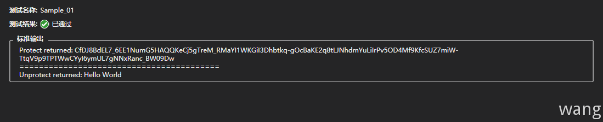
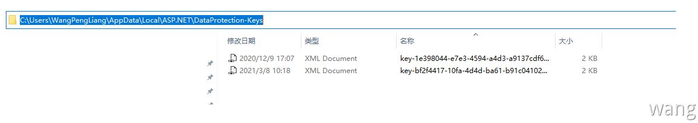

为什么需要数据保护
Web应用程序中经常需要存储一些敏感数据（如用户密码），Windows系统为桌面程序提供了 DPAPI用来使用，但是并不适用于Web系统。ASP.NET Core提供了一套简单易用的API用来保护数据。
简单示例
1 2 3 4 5 6 7 8 9 10 11 12 13 14 15 16 17 18 19 20 21 22 23 24 public class MyClass { readonly IDataProtector protector; public MyClass (IDataProtectionProvider provider ) { protector = provider.CreateProtector(nameof (MyClass)); } public void RunSample ( { string testStr = "Hello World" ; string protectedPayload = protector.Protect(testStr); Console.WriteLine($"Protect returned: {protectedPayload} " ); Console.WriteLine("=========================================" ); string unprotectedPayload = protector.Unprotect(protectedPayload); Console.WriteLine($"Unprotect returned: {unprotectedPayload} " ); } }
1 2 3 4 5 6 7 8 9 10 11 12 13 [TestMethod() ] public void Sample_01 ({ var serviceCollection = new ServiceCollection(); serviceCollection.AddDataProtection(); var services = serviceCollection.BuildServiceProvider(); var instance = ActivatorUtilities.CreateInstance<MyClass>(services); instance.RunSample(); Assert.IsTrue(true ); }

在CreateProtector(nameof(MyClass))中，参数 nameof(MyClass) 可以理解为一个公钥或一个标识，表示当前Protector的用途。Data Protection 采用的是非对称加密，所以系统中应该还有一个私钥，此处的密钥由 ASP.NET Core 在系统内部维护，每一台机器都有一个自有的私钥。
私钥存储
如果程序寄宿在Microsoft Azure下，存储在%HOME%\ASP.NET\DataProtection-Keys文件夹
如果程序寄宿在IIS下，它被保存在HKLM注册表的ACLed特殊注册表键，并且只有工作进程可以访问，使用windows的DPAPI加密
如果当前用户可用，即win10或者win7中，它存储在%LOCALAPPDATA%\ASP.NET\DataProtection-Keys文件夹，同样使用windows的DPAPI加密
如果这些都不符合，那么也就是私钥是没有被持久化的，也就是说当进程关闭的时候，生成的私钥就丢失了
私钥文件

1 2 3 4 5 6 7 8 9 10 11 12 13 14 15 16 17 18 <?xml version="1.0" encoding="utf-8"?> <key id ="bf2f4417-10fa-4d4d-ba61-b91c041029e0" version ="1" > <creationDate > 2021-03-08T02:18:08.641323Z</creationDate > <activationDate > 2021-03-09T09:07:57.9935838Z</activationDate > <expirationDate > 2021-06-06T02:18:08.5176468Z</expirationDate > <descriptor deserializerType ="Microsoft.AspNetCore.DataProtection.AuthenticatedEncryption.ConfigurationModel.AuthenticatedEncryptorDescriptorDeserializer, Microsoft.AspNetCore.DataProtection, Version=2.1.1.0, Culture=neutral, PublicKeyToken=adb9793829ddae60" > <descriptor > <encryption algorithm ="AES_256_CBC" /> <validation algorithm ="HMACSHA256" /> <encryptedSecret decryptorType ="Microsoft.AspNetCore.DataProtection.XmlEncryption.DpapiXmlDecryptor, Microsoft.AspNetCore.DataProtection, Version=2.1.1.0, Culture=neutral, PublicKeyToken=adb9793829ddae60" xmlns ="http://schemas.asp.net/2015/03/dataProtection" > <encryptedKey xmlns ="" > <value > AQAAANCMnd8BFdERjHoAwE/Cl+sBAAAAdzyZbq38yUupe39PhMdBEAAAAAACAAAAAAAQZgAAAAEAACAAAACYrALB9ricGU/5Y6iOanIlQjSCb548eBxAWafTbwxtLAAAAAAOgAAAAAIAACAAAADd6x5zXIP/VC6r1Y5ZAf74uL/+lc68ilrliN7T8dGhYVABAAD0qlvH4LDPjhr3R9WTjP+mOJZrrtt8clI91ULbNPDN2bgwM7ibkICFOLVr9AkwMpRzP+etArhuXbIhH6jzdv9aoAjAcQsQtg37LSlWBI3TFmTtz53nHzIxmfgUuPS23sLjHc7KTBo9+DPHy5BT3qm21y8EDoQ8ehj6WqqwvaEkThRXcG5Kst5HzBbIgeRXSrSprjIeja0uhJpFJOAzOr5ngeoRG4tKfs6VMZMIU9IMbukbuGSC/JoUMR5yzavT/Yi+Cr9x9eeIewDOKzRIaq3wIkYIybhOJxZm5MMgV3A4j4nKSSN0jcW6hXee5ksdywsPKquK5E5fz/jY6bVc9Sj1DV+A6IN6MAjstQzYpZ6CIjFJwgwD7OpD9G/JmlwRNhB/TnNWKAW+4duXYEgKADWA4ZVg2riaYYphPbEmz5RXnphN+C6OEDozguAsW60Z2DJAAAAAPxkE7aqhWgiAk2Fxf8w1yZ6ZMkBSXe/b655jsvfLl6asBUStynk08vPaw5YsD61VyRNp/s8lRjrfwyHpTGrxOw==</value > </encryptedKey > </encryptedSecret > </descriptor > </descriptor > </key >
文件包含一个创建日期，一个过期日期。间隔为90天，90天之后密钥就会失效，系统将自动生成一个新的密钥并设置新的密钥作为活动的密钥。只要已过期的密钥还存在于系统上，仍然可以解密任何受保护的数据。